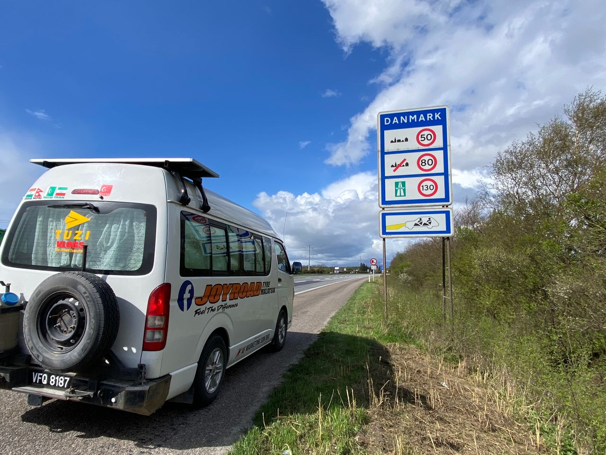
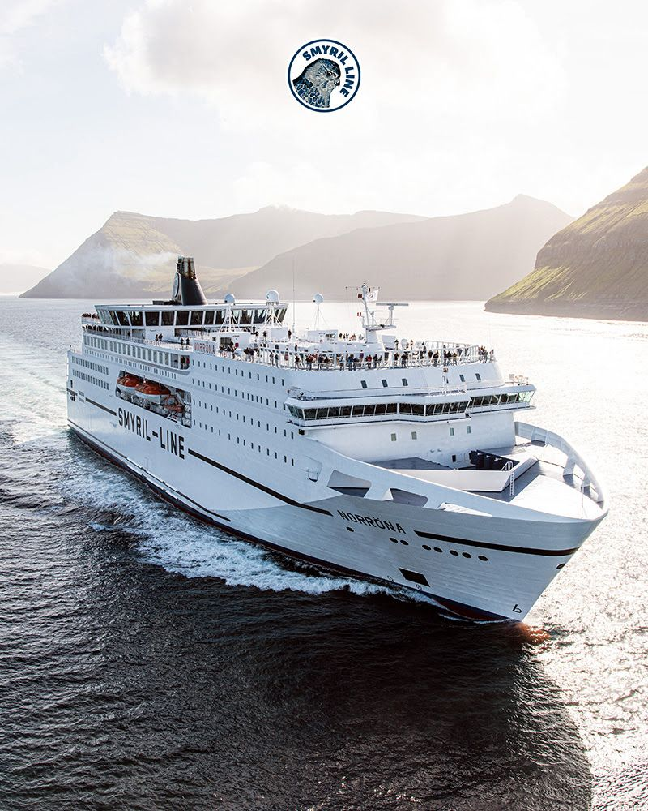

Real Story · 中文
Germany 和 Denmark 的 border。
17 April 2024，我来到 Germany 和 Denmark 的 border。 Toyotaki 终于抵达 Denmark。
这一步很重要，因为 Denmark 是去 Iceland 前的最后一段 road country。 再往前，就不是继续开车过边境， 而是要把 Toyotaki 带上 ferry。

Denmark Rest Stops
Overnight before the ferry.
17 April，我 overnight at parking Motorvejs-Cafeteria Årslev Øst。 18 April and 19 April，我 overnight at Hirtshals seaside kiosk parking。 那边有 public toilet。
这几天的 feeling 很特别： road journey 暂时要停一下， 因为接下来不是普通路段，而是 sea crossing。
Smyril Line
20/4，需要带 Toyotaki 坐 ferry 去 Iceland。
20 April 2024，我需要 take Smyril Line ferry ship to Iceland with Toyotaki。 船是 Norröna。
对 campervan overland 来说， 上船不是普通交通而已。 那是 road 变成 sea 的一刻。 Toyotaki 不是停在岸边等我， 它要跟我一起上船，一起去 Iceland。

English Memory Summary
Denmark opened the sea chapter.
On 17 April 2024, Tuzi reached Denmark from Germany. She overnighted at Motorvejs-Cafeteria Årslev Øst, then on 18 and 19 April stayed at Hirtshals seaside kiosk parking, where there was a public toilet.
On 20 April, Toyotaki had to board the Smyril Line Norröna ferry to Iceland. Denmark became the place where the road journey paused and the sea chapter began.
Heart Statement
有些边境之后不是下一条路，而是一艘船。
Denmark was not only another country. It was the shore before Iceland, where Toyotaki and I prepared to leave the road and enter the sea.